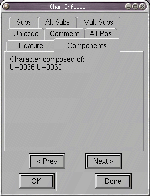

Character Info
Character Info
Character Info
Character Info
This dialog allows you to set the name and unicode encoding of a given character. If you know the name of the character then PfaEdit can tell you the encoding (if you press Set From Name), similarly if you know the encoding then PfaEdit can tell you the name.
The name field contains a pull down list with (possibly) several synonyms for the name of this unicode code point.
Most characters are part of a script system. All this text I am writing
is in the latin script. Greek, cyrillic, arabic, hebrew, chinese ideographs,
katakana, hangul, devangari, etc. are others. Generally PfaEdit is able to
guess the script correctly, but sometimes it will get it wrong (or will not
have enough data to hazard a guess). Scripts are important for the
GPOS and GSUB tables in truetype and opentype
fonts. If you aren't interested in these font formats you may safely ignore
this item. Otherwise there is a pull-down list with the common scripts listed.
 You can assign an arbetrary (unicode) comment to the character. Simply type
any text into this field. The comment is for your use, it will not go into
any generated fonts. You may also assign a color to a character to make it
stand out in the font view.
You can assign an arbetrary (unicode) comment to the character. Simply type
any text into this field. The comment is for your use, it will not go into
any generated fonts. You may also assign a color to a character to make it
stand out in the font view.
 There are
5 seperate sub-dialogs to help you edit the GPOS and GSUB tables.
The first of these is the alternate position dialog which allows you to associate
certain modifications to a character's metrics with a feature in the GPOS table.
There are
5 seperate sub-dialogs to help you edit the GPOS and GSUB tables.
The first of these is the alternate position dialog which allows you to associate
certain modifications to a character's metrics with a feature in the GPOS table.
In the example at right the 'fwid' feature (full width) adds 400 units to the character's advance width and moves it horizontally by 200 units.
A new entry in the list may be created by pressing the [New] button and a dlg will pop up with fields for the metrics you can change. It will also have a field for a feature tag, and a set of check boxes for flags (these flags are not relevant here, but are included as an excercise in assinine completeness.
The [Delete] and [Edit] buttons should be fairly self-explanitory. [Copy] and
[Paste] work as expected too. You can also paste something copied here into the
font view (if you wish to have the same position information available in a
large block of characters).
 A simple substitution replaces one glyph with another. Here the glyph "one" has
a substitution to "onesuperior" when that 'sups' (Superscript) feature is invoked.
A simple substitution replaces one glyph with another. Here the glyph "one" has
a substitution to "onesuperior" when that 'sups' (Superscript) feature is invoked.
You can generate a substitution most easily by draging a character from the font view and droping it here (you will then be prompted for a feature tag for the substitution table.
The multiple and alternate substitution sub-dialogs are very similar to this
one except that they can take multiple glyph names. In a multiple substitution
sub table each glyph is replaced by several other glyphs (sort of the reverse
of a ligature), while in the alternate substitution sub-dialog each glyph is
to be replaced by exactly one glyph from a list and the user is to be given a
choice as to which glyph is to be chosen.
 The ligature field allows you to tell PfaEdit that the current character
is a ligature composed of several other characters. PfaEdit will often be
able to fill this in with the right default value, but occasionally you may
want to change it. The value should be a list of postscript character names
separated by spaces. If a character may be viewed as two different ligatures
then they may both be specified in different lines. For example "ffi"
may be viewed as a ligature of "f" "f" and "i" or of "ff" and "i".
The ligature field allows you to tell PfaEdit that the current character
is a ligature composed of several other characters. PfaEdit will often be
able to fill this in with the right default value, but occasionally you may
want to change it. The value should be a list of postscript character names
separated by spaces. If a character may be viewed as two different ligatures
then they may both be specified in different lines. For example "ffi"
may be viewed as a ligature of "f" "f" and "i" or of "ff" and "i".
In the example at right the "m" character is one of a set of flags stored in the GSUB table. It indicates that combining marks should be ignored when looking for the ligature.
The GPOS and GSUB tables allow further refinements
of ligatures. You may classify a ligature as: Standard, Required, Discretionary,
Historic or Fraction. Required ligatures must be replaced, Standard ligatures
should be, Discretionary ones may be, and Historic ones should only be used
int appropriate circumstances. The pull down list on the Tag field allows you
to pick what type of ligature this should be.

Some characters (ligatures, accented characters, Hangul syllables, etc.)
are built up out of other characters. Displayed underneath the ligature field
are the components of the current character, if those componants are in the
font then you can use PfaEdit's Element->Build Accented or
Element->Build Composit commands to create the current character. The
information displayed here is informative only, you may not change this field
directly.
The Next and Prev buttons allow you to move from one character to the next (if, for example, you need to enter encodings for a range of characters).
The Done (or Cancel) button only Cancels work in the current character. If
you have already used Next or Prev then those earlier changes will not be
cancelled.
See Also: